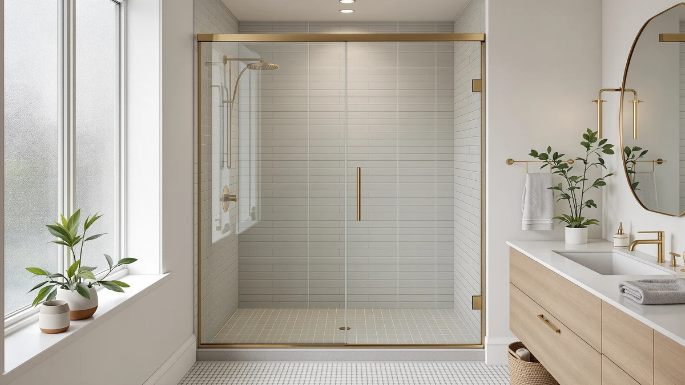

Sliding Bathroom Shower Doors (2026)
Prices and picks verified as of September 2026. Independent, reader-supported reviews.


Quick Answer
Sliding bathroom shower doors glide on a top and bottom track instead of swinging open, so they fit tight alcoves and tub-to-shower conversions where a hinged door has no room to move. Our top pick is the GETPRO Shower Door Double Sliding: both panels move independently, so you can enter from either side, and it comes in at the lowest price of the seven doors we compared.
Our pick: GETPRO Shower Door Double Sliding — $260.07 Check Price on Amazon
Bottom line: our top pick is the GETPRO Shower Door Double Sliding 57-60 in. W x 72 in. H at $260.07. The best budget option is the GETPRO Shower Door Double Sliding 56-60 in. W x 72 in. H at $306.84.
Things to Know Before You Buy
- You lose about half the width to overlap. Sliding bathroom shower doors work by running one panel behind or beside the other, so a 60" door gives you a walk-in gap closer to 28-30", not the full 60".
- Single-bypass and double-sliding are different systems. A single-bypass door has one moving panel and one fixed panel. A double-sliding door lets both panels move, so you can open from either side or step in near the center.
- Height changes how much water stays inside. The doors here range from 72" to 76" tall. The taller 76" options contain more splash and steam, which matters if your shower head sits high or you have a rainfall fixture.
- The bottom track is the part that needs upkeep. It is where water, soap scum, and hair collect, and a neglected track is the most common reason rollers start to stick or grind.
- Most of these doors ship in an adjustable width range. A door listed for 56-60" is built to fit any opening in that span, which forgives a wall that is slightly out of square, but you still need to measure your actual opening before ordering.
- Tempered glass is heavy. Every door in this roundup uses tempered safety glass for code compliance, and the panels are heavy enough that installation is a two-person task, not a solo Saturday project.
Sliding bathroom shower doors solve a specific problem: not enough floor space for a door to swing open. A pivot or hinged door needs a clear arc in front of it, and in a small alcove, a tub-to-shower conversion, or a bathroom where the toilet sits close to the tub, that arc simply is not there. A bypass door sidesteps the whole issue. The panels ride a top and bottom track, so nothing swings into the room and nothing clips the vanity or the toilet lid on the way past.
That space savings comes with two trade-offs worth knowing up front. One panel always overlaps the other, so your real walk-in opening is only about half the total door width. And the bottom track that makes the sliding motion possible is also where water and soap scum collect, so it asks for a weekly wipe to keep gliding smoothly. Neither one is a dealbreaker for most bathrooms, but both change how you should shop.
We compared seven sliding bathroom shower doors ranging from about $260 to $499, covering single-bypass and double-sliding hardware, 72" and 76" heights, and both frameless and semi-frameless styling. Below, each pick is sorted by what it does best, whether that is double-sliding flexibility, maximum height for splash containment, or the lowest price for a standard opening, so you can jump straight to the one that fits your bathroom.
Why You Should Trust Us
Best Shower Doors is run by Ilane Tall, who covers bathroom fixtures and renovation gear for a US audience. We do not run a fake testing lab and we do not invent star ratings. We are a research-based review site: we read the actual manufacturer specifications for every sliding bathroom shower door in this guide, cross-check those claims against verified buyer reviews, and pay attention to the details that decide whether a door holds up, like glass thickness, roller and track design, and how forgiving the adjustable width range is.
Every product here is a real listing you can buy today, and we checked every price and dimension at the time of writing. When a door has a genuine limitation, we say so plainly instead of burying it. Our goal is to help you pick a sliding bathroom shower door that fits your opening and lasts, not the one with the biggest discount banner.
How We Picked
We started with sliding bathroom shower doors that sell in real volume to US buyers, then filtered hard. Every candidate had to use tempered safety glass, offer a genuine adjustable width range so it can fit an out-of-square opening, and be reversible for a left- or right-hand install. We set aside doors with a recurring pattern of complaints about rollers jumping the track, bottom seals that leak, or hardware that shows up corroded.
From there, we spread the picks across situations instead of naming a single winner and stopping. A shopper converting a tub wants something different from a shopper building a walk-in from scratch, and a shared bathroom benefits from double-sliding access in a way a single-person bathroom might not. So the seven doors here cover a double-sliding option, a tall 76" frameless pick, a standard 72" alternative at a lower price, and two additional configurations of doors already on this list, so you can compare price and size variations side by side before you buy.
How We Compared
A sliding bathroom shower door is a fixed installation, not a gadget you can run through a lab, so our comparison is built on specifications and on the experience verified buyers report after living with each door. For every pick, we compared glass thickness, roller and track hardware, seal quality, and how the finish holds up against hard water and repeated splashing. We read through owner reviews specifically looking for the failure modes that matter over years of daily use: rollers that jump the track, bottom sweeps that let water past, and coatings that spot or pit.
We also weighed the two trade-offs that apply to every sliding bathroom shower door, the reduced walk-in width and the bottom-track cleaning, and noted where a given design makes either one better or worse. The result is a set of picks chosen on what actually holds up in a wet, high-use bathroom, not on marketing copy.
Our Picks

GETPRO Shower Door Double Sliding
What we like
- Double-sliding hardware means both panels move, so you can open the shower from either side
- Lowest price of the seven doors we compared, at about $260
- Tempered safety glass at a 60" width fits the most common alcove opening
- Reversible installation adapts to a left- or right-hand layout
Flaws but not dealbreakers
- Two moving panels mean two sets of rollers and tracks to keep clean instead of one
- At 72" tall it contains slightly less splash than the 76" doors on this list
| Material | — |
| Size | 60'' W x 72'' H |
The GETPRO is our top pick among sliding bathroom shower doors because it solves the biggest limitation of a standard bypass door: being stuck entering from one fixed side. Because both panels ride their own track, you can slide either one open, which means you can step in near the center or from whichever side is more convenient. In a shared bathroom, or a shower where the controls sit off-center, that flexibility is a genuine quality-of-life upgrade over a single-bypass design.
It also happens to be the least expensive door in our comparison, at roughly $260 for a 60" opening. The trade-off for the double-sliding design is maintenance: instead of one bottom track to wipe down, you have two, and both sets of rollers need periodic attention to keep gliding smoothly. At 72" tall it is also the shortest option here, so it holds back slightly less splash than the 76" doors. For a standard alcove where flexible entry matters more than maximum height, this is the door to buy first.

BoBliss Frameless Sliding Glass Shower
What we like
- Frameless glass design gives a clean, modern line without a metal surround
- Tall 76" height contains more splash and steam than a standard 72" door
- Adjustable 56-60" width range fits a slightly out-of-square wall
- Reversible for a left- or right-hand opening
Flaws but not dealbreakers
- At $419.99 it costs noticeably more than our GETPRO top pick
- A wide, tall frameless panel is heavier than a standard 72" door, so plan for a two-person install
| Material | — |
| Size | 56-60" W x 76" H |
The BoBliss steps up from our top pick in two directions at once: it is frameless, and it is tall. At 76", it is four inches taller than the standard 72" doors in this comparison, which translates directly into less water and steam escaping over the top of the panel. Pair that with a frameless design, no visible metal frame running around the glass, and you get a door that reads as a premium, minimal glass wall rather than a boxed-in enclosure.
That combination comes at a price. At $419.99, the BoBliss costs about 60 percent more than our GETPRO top pick, and the taller, wider glass panel is heavier, so the installation leans more toward a genuine two-person job. The 56-60" adjustable range still gives some forgiveness for a wall that is not perfectly square. If your priority is a frameless look with maximum height in a wider opening and the budget supports it, this is the door for that job.

ENSO SENKA 56-60” W x
What we like
- Full 76" height ties for the tallest door in our comparison
- 60" width covers the most common standard alcove opening
- Tempered safety glass with reversible installation
Flaws but not dealbreakers
- At $499 it is tied for the most expensive door we compared, nearly double our top pick
- The listing does not specify glass thickness, so confirm that detail with the seller before ordering if it matters to you
| Material | — |
| Size | 60" W x 76" H |
The ENSO SENKA sits at the top of our price range, and the reason is height: at 76" tall paired with a full 60" width, it gives you the largest overall glass area of any door in this comparison. For a shower with a high or rainfall showerhead, that extra height matters more than it sounds, since it is the difference between water staying inside the enclosure and water finding its way over the top edge.
At $499, this is not a budget decision, it is the price of the tallest, widest sliding bathroom shower door in our lineup. If your bathroom has the standard 60" alcove and you are willing to pay for the extra four inches of height over a 72" door, the ENSO SENKA delivers that. If height is not a priority for your shower, our GETPRO or Botwinkle picks get you a comparable width for meaningfully less money.

Botwinkle Shower Door 56-60" W
What we like
- Adjustable 56-60" width range fits a broader set of alcove openings than a fixed-width door
- 76" height matches our tallest picks for better splash containment
- Reversible for a left- or right-hand install
Flaws but not dealbreakers
- At $424.99 it costs more than our GETPRO and second Botwinkle picks
- The wide adjustment range means you still need to measure carefully to avoid a gap at either end of the track
| Material | — |
| Size | 56"-60" W x76 H |
This Botwinkle door earns its spot with an adjustable 56-60" width range rather than a fixed 60" opening. That four-inch window of flexibility matters if your alcove measures anywhere from 56" to 60" wall to wall, since it means you order one door instead of hunting for an exact match. Combined with the 76" height, it lands in the same splash-containment tier as our tallest picks.
At $424.99, it sits in the middle of our price range, above the GETPRO and the second Botwinkle listing but below the ENSO SENKA and BoBliss. The trade-off with any adjustable-range door is that you still need to measure your opening precisely; the range covers variation, but it does not eliminate the need for an accurate tape measure before you order. For a taller door with real width flexibility, this is a solid middle-tier pick.

ENSO SENKA 56-60” W x
What we like
- Same 60" x 76" dimensions as our other ENSO SENKA pick, so sizing questions are already answered
- A separate listing means separate stock and shipping estimates, useful if one is backordered
Flaws but not dealbreakers
- Priced identically to our other ENSO SENKA pick, so there is no cost advantage to switching between the two
- Worth checking current photos and seller details before ordering, since separate listings can update independently
| Material | — |
| Size | 60" W x 76" H |
This is a second ENSO SENKA listing at the identical 60" width, 76" height, and $499 price as our other ENSO SENKA pick above. Sellers frequently list the same core door under more than one product page, sometimes tied to a different seller account or a slightly different photo set, and the practical use for you is a backup: if one listing is temporarily out of stock or shows a slower shipping window, this one gives you the same door without starting your research over.
Because the dimensions and price match exactly, there is no functional reason to prefer one listing over the other beyond stock and shipping speed at the moment you buy. We would check both before ordering and go with whichever has the better delivery estimate and seller rating at that time.

GETPRO Shower Door Double Sliding
What we like
- Same double-sliding, either-side-entry design as our top pick, at the same 60" x 72" size
- A separate listing with its own stock and shipping timeline
Flaws but not dealbreakers
- At $306.84 it runs about $47 more than our top-pick GETPRO listing for the same specs
- No added feature justifies the higher price, so check our top pick's availability first
| Material | — |
| Size | 60'' W x 72'' H |
This is the same GETPRO double-sliding door as our top pick, listed separately at $306.84 instead of $260.07. Same 60" width, same 72" height, same either-side entry from independently sliding panels. The only real difference between the two listings is price and, potentially, which one ships faster or has better current stock.
We are including it here because Amazon pricing on doors like this shifts, and by the time you are ready to buy, this listing could easily be the cheaper of the two. Check both ASINs before you check out, and buy whichever currently has the lower price and the shipping window that works for your renovation timeline.

Botwinkle Shower Door 56-60" W
What we like
- Same adjustable 56-60" width range as our taller Botwinkle pick
- At $329.99 it costs about $95 less than the 76" version
- Standard 72" height suits most alcoves without needing the extra four inches
Flaws but not dealbreakers
- 72" contains slightly less splash and steam than the taller 76" Botwinkle
- Not the right choice if your shower has a high or rainfall showerhead that benefits from extra height
| Material | — |
| Size | 56"-60" W x72 H |
This is the standard-height version of our other Botwinkle pick: same adjustable 56-60" width range, same brand and reversible hardware, but 72" tall instead of 76". For most bathrooms with a standard-height showerhead, that four-inch difference is not noticeable in daily use, and here it saves you close to $95 compared with the taller model.
The only real reason to pay more for the 76" version is height-sensitive splash containment, for a rainfall fixture or a tall shower stall where water tends to escape over the top of a shorter panel. If that does not describe your bathroom, this shorter Botwinkle gets you the same adjustable width and the same brand reliability for meaningfully less money.
Quick Comparison
Here is how all seven sliding bathroom shower doors stack up on price and size, side by side.
| Product | Material | Price | Rating | Best for | Get it |
|---|---|---|---|---|---|
| GETPRO Shower Door Double Sliding | — | $260.07 | 4 | Best overall; either-side entry, lowest price | View on Amazon → |
| BoBliss Frameless Sliding Glass Shower | — | $419.99 | 4 | Frameless look at a tall 76" | View on Amazon → |
| ENSO SENKA 56-60” W x | — | $499.00 | 4 | Tallest 60" x 76" door, premium tier | View on Amazon → |
| Botwinkle Shower Door 56-60" W | — | $424.99 | 4 | Adjustable width, tall 76" height | View on Amazon → |
| ENSO SENKA 56-60” W x | — | $499.00 | 4 | Alternate listing to compare against pick above | View on Amazon → |
| GETPRO Shower Door Double Sliding | — | $306.84 | 4 | Backup listing for our top pick | View on Amazon → |
| Botwinkle Shower Door 56-60" W | — | $329.99 | 4 | Standard 72" height, lower price | View on Amazon → |
The Competition
Several other categories of sliding bathroom shower doors came up in our research but did not make the final seven. Fully framed sliding doors are the cheapest option on the market, and if budget is your only concern they get the job done, but the wide metal frame looks dated next to the frameless and semi-frameless panels above, and the extra channel traps even more grime than a standard bottom track. We would point you to our GETPRO or Botwinkle picks instead.
Pivot and hinged doors can give you a wider, uninterrupted opening because there is no overlapping panel eating into the width, but they need a clear arc of floor space in front of the shower. In the tight alcoves and tub conversions these sliding bathroom shower doors are built for, that space usually is not available, which is the entire reason to choose a bypass door in the first place.
We also looked at curved and neo-angle sliding units designed for corner showers. They are a legitimate option, but they are sized for a specific corner footprint rather than a standard straight alcove, so they do not compare directly to the doors here. If you have a corner shower, shop that category specifically instead of trying to fit a straight bypass door into a corner frame.
Frequently Asked Questions
How much walk-in space do sliding bathroom shower doors actually give you?
Less than the total door width, because one panel always overlaps the other. On a 60" sliding bathroom shower door, expect a walk-in gap in the high 20 to low 30 inch range rather than the full 60 inches. It is enough room for most adults, but tighter than a hinged door of the same width, so measure your opening and think about who uses the shower before you buy.
What is the difference between single-bypass and double-sliding shower doors?
On a single-bypass door, one panel slides over a second panel that stays fixed, so you always enter from the same side. On a double-sliding door, like our GETPRO pick, both panels move, so you can open the shower from either side or step in near the center. Double-sliding hardware gives you more flexibility, but it also means two sets of rollers and tracks to keep clean instead of one.
Do sliding bathroom shower doors need a lot of maintenance?
The glass itself is low-maintenance, but the bottom track is not. It collects water, soap scum, and hair, and if you skip cleaning it the rollers start to drag or grind within a few months. A weekly wipe with a squeegee and an occasional vinegar rinse keeps the track clear and the door gliding the way it did on day one.
Does the height of a sliding bathroom shower door actually matter?
Yes, more than most buyers expect. A 76" door, like our BoBliss and ENSO SENKA picks, contains noticeably more splash and steam than a 72" door, especially with a rainfall or high-mounted showerhead. If your fixture sits high or you tend to get water on the floor with your current door, the extra four inches of height is worth the added cost.
Can I install a sliding bathroom shower door myself?
Many homeowners do, but it is not a one-person task. Every door in this comparison fits an adjustable width range and is reversible for a left- or right-hand opening, which helps with an out-of-square wall. The real challenge is weight: tempered glass panels are heavy and awkward to hold in place while you set the track and rollers, so plan on a second set of hands and measure your opening carefully against the door's adjustable range before you order.